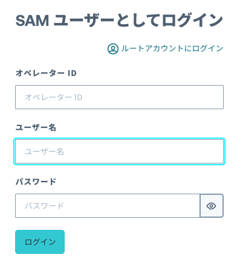

前提
このドキュメントを進めるにあたって、以下のデバイスが必要となります。
- SORACOM LTE-M Button for Enterprise (本ハンズオンではソラコムからの貸与となります)
このドキュメントを進めるにあたって、以下のアカウントが必要となります。
- SORACOM
- SAMユーザー
- AWS
このドキュメントを進めるにあたって、以下の知識が必要となります。
- AWS Lambda (Pythonのサンプルコード、モジュールは準備済)
SORACOMのアカウントをお持ちでない方は https://users.soracom.io/ja-jp/guides/getting-started/create-account/ から作成してください。
本ハンズオンではSAMユーザーでの操作する前提のテキストになっています。SAMユーザーの作成がまだの方はhttps://users.soracom.io/ja-jp/docs/sam/create-sam-user/ から作成してください。
AWSのアカウントをお持ちでない方は https://aws.amazon.com/jp/register-flow/ から作成してください。
構成図

SORACOMユーザーコンソールへのログイン手順を解説します。
ユーザーコンソールへログインする
SORACOM ユーザーコンソール(SAMユーザログイン) (https://console.soracom.io/#/sam_login?coverage_type=jp) へアクセスします。SAMユーザのログイン画面が表示されますので、ご自身のオペレーターID、SAMユーザー、パスワードを入力し [ログイン] ボタンをクリックしてください。

SAMユーザーが他要素認証設定済みの場合は、MFA認証コードを入力する画面に遷移します。設定済みのMFA認証コードを入力してください。
以下のような「SIM 管理」画面が表示されたらログイン完了です。

ガジェット設定を行い、動作確認として、Enterprise Button(または仮想ボタン) をクリックした際に SORACOM Harvest に対してクリックタイプを保存する方法を解説します。

ガジェット設定にて、グループを作成する。
- ユーザーコンソール(https://console.soracom.io/) の "Menu" から "ガジェット管理" の"LTE-M Button for Enterprise/Plus" をクリックします。
- "デバイスを追加"ボタンをクリックします。


- 今回使用するボタンが表示されているので、チェックを入れて、"次へ : グループを選択"をクリックします。
※もし、ボタン一覧に利用するボタンが表示されていない場合は、チューターにご連絡ください。 - 新規グループを作成 を選び、グループ名に任意の名前 (たとえば "handson-button")を入力して、"次へ : 設定を編集" をクリックします。
- 可視化セクションの"可視化を有効にする(SORACOM Harvest Data / Lagoon)"と簡易位置測位機能セクションの"位置情報を付与する(簡易位置測位機能)"にチェックを入れて、画面下部の"保存"ボタンをクリックします。
- 設定完了のダイアログが出てくれば、完了です。"デバイス一覧に戻る"をクリックして、デバイス一覧画面に戻ります。
- デバイス一覧にて、"SIMグループを編集"ボタンをクリックします。
- 作成したSIMグループの設定画面に移動しますので、SORACOM Air for セルラー設定 セクションで、簡易位置測位機能がON、バイナリーパーサーがONで、フォーマットに@buttonと入っていることを確認します。


- SORACOM Harvest Data 設定セクションにて、設定がONになっていることを確認します。

Enterprise Button を押して Harvest を確認する
いよいよ Enterprise Button を押します。ボタンをクリックし、 LED がオレンジ色となり、数秒後に緑色となればデータの送信は成功です。

Harvest 上のデータを以下の手順で確認します。
- "Menu" から "SIM 管理" を選択します。
- Enterprise Button の SIM の左端にある チェックボックスを選択し、"操作" => "データを確認" を選択します。
- "データ" 列にて、"clickTypeName" が "SINGLE" であることを確認します。
- マップピンアイコンを選択することで表示を地図に変更して、位置情報を確認します。左上の "+" や "-" でズームを調整できます。"データ" にも
$metadata.locationオブジェクトとしてで位置情報が入っています。 - Enterprise Button は以下 3 種類のクリックに対応しています。それぞれぜひ試してみてください。連続してデータの送信をしたい場合は Harvest の画面にて「自動更新」を "ON" にしてみてください。


- シングル: 短く(1.2 秒未満) 1 回押す
- ダブル: 2 秒以内にシングルクリックを 2 回行う
- ロング: 1.2 秒以上押し続ける。


AWS LamdaとSORACOM Funkを設定し、ボタンクリックで、デバイスが動作させるところまでを解説します。
まず、利用するサービスについて解説します。
SORACOM Funkについて
今回のハンズオンでは、「クラウドファンクションアダプタ SORACOM Funk」を用いてAWS LambdaのFunctionを呼び出します。
SORACOM Funkについて詳しくは以下の公式ページを参照ください。
https://soracom.jp/services/funk/
利用料金
SORACOM Funk の課金体系は、リクエスト数に応じた従量課金です。初期費用、基本料金はかかりません。
- 従量課金
1 リクエスト(*) あたり 0.00198円 - 無料利用枠
1アカウントあたり月間 50,000 リクエストまで毎月無料
今回のハンズオンでは、ほとんどの方は無料枠の中でご利用いただけます。
AWS Lambdaについて
今回のハンズオンでは、AWS Lambda(以下Lambda)を使ってデバイスにメッセージを送信します。
AWS Lambdaについては以下の公式ページを参照してください。
https://aws.amazon.com/jp/lambda/
Lambdaにコードをデプロイする方法はいくつかありますが、今回は運営が準備したコードをAWSコンソールから貼り付けてデプロイします。
利用料金
Lambdaの利用料金は以下の公式ページをご覧ください。
https://aws.amazon.com/jp/lambda/pricing/
今回のハンズオンの内容は無料枠の中でご利用いただけます。翌月以降も費用が発生することはまずありませんが、不安な方はハンズオン終了後にリソースを削除してください。
AWS Lambdaの設定
AWS Lambdaにデバイスへメッセージを送信するプログラムをデプロイします。
まず、AWSコンソールにアクセスします。右上のリージョンが「バージニア北部」になっていない場合は、プルダウンから変更してください。

検索窓に「Lambda」と入れてLambdaのコンソールにアクセスします。

関数の作成
「関数の作成」を押し、新しい関数を作成します。

関数のタイプで「一から作成」を選び、適当な関数名(例: soracom-techon-handson-20220408-role) を入力、ランタイムは「Python3.9」を選びます。それ以外の部分はデフォルトのままで「関数の作成」を押します。

コードの編集
コードソースに入っているデフォルトのコードを削除し、「keiganmotor_operator.py」の内容をそのまま貼り付けます。
コード内の24行目の
「WHAT_YOUR_NAME = "" 」
の"" 内に、運営より指定された文字列を入力してください。
そして、「Deploy」ボタンを押してコードをデプロイします。

環境変数の設定
「設定」→「環境変数」→「編集」を押し、このLambda関数の環境変数を設定します。

「環境変数の追加」を4回押し、キーと値を入力する枠を4個作ります。そこに以下のキーと値を入れて、「保存」を押します。
・ DEST_REGION_NAME → 当日運営にお問い合わせください
・ DEST_ENDPOINT_URL → 当日運営にお問い合わせください
・ DEST_AWS_ACCESS_KEY_ID → 当日運営にお問い合わせください
・ DEST_AWS_SECRET_ACCESS_KEY → 当日運営にお問い合わせください

タイムアウトの設定
次にLambdaの実行時間(タイムアウト)を変更します。「一般設定」から「編集」を押します。

デフォルトではタイムアウトが3秒になっているので、これを30秒に変更して「保存」を押します。

動作テスト
保存できたら、動作テストを行います。
「テスト」を押し、テストイベントの名前に「test」と入力し、JSONが記載されている部分に以下のJSONを貼り付け、「変更を保存」を押します。
{
"clickType":2,
"clickTypeName":"SINGLE",
"batteryLevel":1,
"binaryParserEnabled":true
}
保存したら、「テスト」ボタンを押します。下図のように、「実行結果:成功」と出ていれば成功です。
関数のARNの取得
Lambdaのコンソールにて、「関数のARN」をコピーしておきます。

トラブルシューティング
設定がうまく進まないときにご覧ください。ここまでの作業が出来ている場合は次に進んでください。
・コードのコピペが崩れてる、全角スペースが入ってるなどコードの問題: ファイルは文字コード UTF-8になっていますので、ファイルを開いたエディタによってはShiftJISになってしまいますと、文字化けします。エディタの設定で、UTF-8で開き直してください。
・成功したけど、想定通りの動作じゃない。: keiganmotor_operator.pyの内容を貼り付けたあと、「Deploy」ボタンを押し忘れてますと、コードの変更が反映されず以下のような実行結果が表示されます。エディタ画面で「Deploy」ボタンを押してください。

・タイムアウトエラーが出る。: タイムアウト時間が初期設定の3秒のままだと、初回起動時にタイムアウトエラーになることがあります。タイムアウト時間の変更を行ってください。
IAM Roleの作成
SORACOM FunkからAWS Lambdaを呼び出すための権限であるIAM Roleを作成します。
AWSのコンソールにて、検索窓に「IAM」と入力し、IAMのコンソールにアクセスします。

IAM Roleの作成
ロールを選択します。

ロールの作成をクリックします。

以下の項目を入力して、次へをクリックします。
信頼されたエンティティタイプ | AWSアカウント |
AWSアカウント | 別のAWSアカウント |
アカウントID | 762707677580 |
オプション | 外部IDを要求する |
外部ID | 任意(例: soracom-funk-roleid) |

「AWSLambdaRole」を検索してチェックを入れ、次へをクリックします。

適当なロール名(例: soracom-techon-handson-20220408-role)を入力し、ロールを作成します。

ロールARNの取得
作成したロールを表示します。

ロールのARNをコピーします。

SORACOM認証情報の登録
AWS Lambdaを呼び出すための認証情報の登録をします。
SORACOM ユーザーコンソールにログインします。
ユーザーコンソール右上のユーザー名をクリックし、「セキュリティ」を選択します。

認証情報ストアを開き、「認証情報を登録」をクリックします。

以下の情報を入力し、「登録」をクリックします。
認証情報ID | 任意(例: button-function) |
種別 | AWS IAM ロール認証情報 |
ロールARN | 作成したIAM RoleのARN |
外部ID | 作成したIAM Roleの外部ID(例: soracom-funk-roleid) |

SORACOM Funkの設定
AWS Lambdaを呼び出すSORACOM Funkの設定をします。
所属させたグループ名をクリックし、SIMグループの設定画面に移動します。

SORACOM Funkの設定を開き、以下の設定を入力して「保存」をクリックします。
設定 | ON |
サービス | AWS Lambda |
関数のARN | AWS Lambdaの関数のARN |
認証情報 | 作成した認証情報(例: button-function) |

動作確認
ボタンを押してみましょう。LEDが緑点灯すれば正常にリクエストできています。
デバイスが動作していると思うので、確認しましょう。

後片付けの手順を解説します。
AWSリソース
AWS上のリソースは、残っていても、課金されることはありませんが、不要な場合は、以下を行ってください。
- AWS Lambda関数の削除
- SORACOM Funk実行用のIAMロールの削除
IoTボタンシュミレータの場合
放置しておいても、課金が発生することはありませんが、後片付けを行います。
すでに今回のハンズオン以外で、Harvestなどのサービスをお使いの場合は、料金が発生しますので、不要の場合は削除を行ってください。
バーチャルSIMについても、アカウントに１つだけは無料で保持できますので、そのままでも問題ありません。1つ以上お持ちの方のみ、不要の場合は削除を行ってください。
WireGuardの削除
OS標準のアンインストール方法で削除します。
SORACOM LTE-M Button for Enterpriseシミュレータの削除
こちらもOS標準のアンインストール方法で削除します。
SIMグループの削除
SIMグループを削除するには、紐づいているSIMグループを削除してから削除する必要があります。
- SIMの紐付け解除は、SIMグループの登録と同じ手順で、SIMを選択して、SIMの所属グループ変更画面を表示します。そこで、新しい所属グループで[グループ解除]を選択して、登録すれば解除されます。

- SIMグループの削除は、SIMグループ設定画面右上の[削除]をクリックします。

- 問題なければそのまま[削除する]をクリックします。これで完了です。

なお、SIMの紐付けがあると、エラーになりますので、必ずSIMの紐付けを全部解除してから行ってください。
バーチャルSIMの削除(すでに1つ以上バーチャルSIMがある方のみ実施してください)
- バーチャルSIMの解約は、通常のSIMの解約と同じく、SIMを選択後、画面上部の[操作 ▼]をクリックし、[解約]をクリックします。

- 問題なければ、そのまま[解約する]をクリックしてください。

- SIM一覧からバーチャルSIMがなくなっていればOKです。
IAMロール認証情報の削除
- 右上のメニューからセキュリティをクリックします。
- セキュリティページの左メニューの認証情報ストアをクリックします。


- 作成したIAMロールの右側にあるゴミ箱アイコンをクリックします。

- ダイアログで削除ボタンをクリックします。これで削除完了です。

ボタン持ち込みの場合
このままでも、課金が発生することはありませんが、後片付けを行います。
後片付け(IoTボタンシュミレータ)の手順にある、以下の手順のみ行ってください
- SIMグループの削除
- IAMロール認証情報の削除
ボタン貸し出しの場合
貸し出しの場合、SORACOMのコンソールからログアウトして、ボタンを運営メンバーにお返しください。